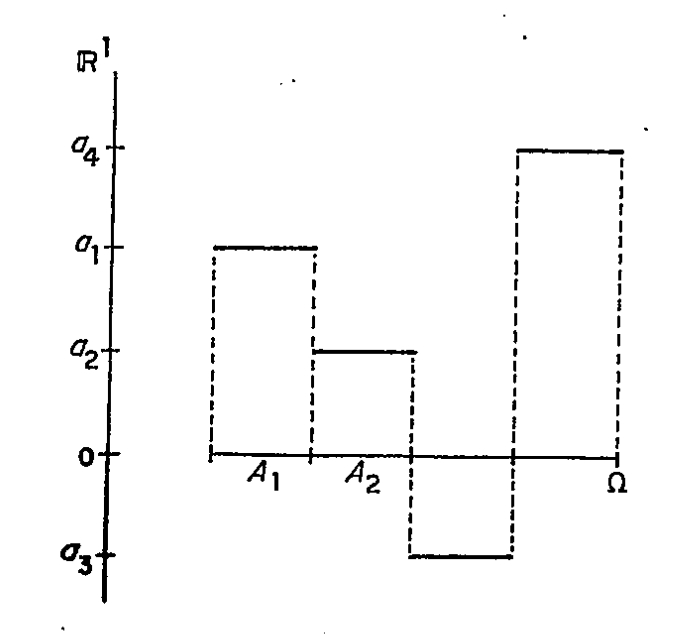

Introdução
Para a leitura deste livro é essencial que o leitor tenha realizado anteriormente um curso de Cálculo Diferencial em várias variáveis reais e outro de Funções Reais. Seria conveniente que conhecesse os temas mais importantes de um curso de Análise no \(\mathbb{R}^n\), noções gerais de espaços topológicos, e algumas definições e propriedades básicas de Espaços de Banach. Porém o requisito talvez mais importante é o de ter um pouco de maturidade matemática. Por essa razão é aconselhável que um curso baseado neste livro seja deixado para a segunda metade de um programa de mestrado. A notação usada é a usual em outros livros e textos gerais de matemática. Alguns símbolos que achamos que não sejam frequentemente usados, são indicados a seguir.
O supremo e ínfimo de dois números reais \(a\) e \(b\), serão indicados por \(a \lor b\) e \(a \land b\) , respectivamente verifica-se facilmente que: \[a \lor b = \frac{1}{2}(a + b + |a - b|)\] e \[a \land b = \frac{1}{2}(a + b - |a - b|)\] Se \(a\) e \(b\) são números reais, teremos sempre: \[|a+b| \le |a| + |b| \quad \text{e} \quad ||a|-|b|| \le |a-b|.\]
Se \(f\) e \(g\) são funções reais, definimos a função máximo (supremo) de \(f\) e \(g\) (\(f \lor g\)) e mínimo (ínfimo) de \(f\) e \(g\) (\(f \land g\)) pelas fórmulas: \[(f \lor g)(x) = f(x) \lor g(x) \quad \text{e} \quad (f \land g)(x) = f(x) \land g(x).\] Caso \(g=0\), escrevemos \(f^{+}\) em lugar de \(f \lor 0\), e \(f^{-}\) em lugar de \(-(f \land 0)\). Resulta então que, \(|f| = f^{+} + f^{-}\), e \(f = f^{+} - f^{-}\).
Se \(\{x_n\}_{n=1,2,...}\) é uma sucessão de números reais, definimos o limite superior e o limite inferior de tal sucessão, de acordo com as fórmulas: \[ \lim_n \sup x_n = \inf_n \sup \{x_k : k \ge n\}, \] \[ \lim_n \inf x_n = \sup_n \inf \{x_k : k \ge n\}. \] Temos que \(-\infty \le \lim_n \inf x_n \le \lim_n \sup x_n \le +\infty\).
Por outro lado, sendo \(\{f_n\}_{n=1,2,...}\) uma sucessão de funções, podemos naturalmente definir \(\lim_n \sup f_n\) e \(\lim_n \inf f_n\) como as funções: \[\begin{gathered} (\lim_n \sup f_n)(x) = \lim_n \sup f_n(x). \\ (\lim_n \inf f_n)(x) = \lim_n \inf f_n(x). \end{gathered} \]
Se uma série converge de modo absoluto (série absolutamente convergente), será por vezes indicada com a notação \(\sum\limits_{n=1}^{\infty} |x_n| < \infty\).
Se \(\{x_n\}_{n=1,2,...}\) converge a \(x\) escreveremos \(x_n \to x\). Se \(\{x_n\}_{n=1,2,...}\) é crescente (decrescente) e converge a \(x\) escreveremos \(x_n \uparrow x\) \((x_n \downarrow x)\). O maior inteiro menor ou igual ao número real \(x\) será denotado por \([x]\) (parte inteira de \(x\)). A menos de mencionado o contrário a letra \(\mathbb{N}\) indicará o conjunto \(\mathbb{N} = \{1, 2, ...\}\). \(\mathbb{R}^1\) denotará o conjunto dos números reais e \(\mathbb{R}^n = \mathbb{R}^1 \times \mathbb{R}^1 \times \dots \times \mathbb{R}^1\) o produto cartesiano de \(\mathbb{R}^1\) \(n\) vezes.
Vamos agora fazer uma descrição geral do conteúdo, motivações e objetivos desta obra.
No Cap. 0 o leitor vai encontrar uma revisão rápida das noções básicas da Teoria dos Conjuntos. O propósito do capítulo é relembrar ao leitor certas propriedades, definições e teoremas básicos, e fundamentalmente fixar uma notação que será utilizada constantemente nos capítulos seguintes. A obra de P. R. Halmos mencionada na referência [16] pode ser consultada para maiores detalhes.
Consideremos, para fixar as ideias, a família de retângulos no plano real \(\mathbb{R}^2\). \[ S = \{D_1 \times D_2: D_i \text{ é intervalo de } \mathbb{R}^1, i=1, 2\} \] Por intervalo entendemos qualquer intervalo finito, aberto, fechado ou semi-aberto de \(\mathbb{R}^1\).
Definimos sobre \(S\) a seguinte função de conjunto: \[ \lambda(D_1 \times D_2) = (b_1 - a_1)(b_2 - a_2) \] onde \(a_1 \le b_1\) são os extremos de \(D_1\) e \(a_2 \le b_2\) são os extremos de \(D_2\). \(\lambda\) é a medida (a área) de \(D_1 \times D_2\).
Um dos problemas básicos da Teoria da Medida é a de “aumentar” (estender) a classe dos conjuntos que sejamos capazes de medir (para os quais possamos definir um número que será a sua área) de forma tal que a área de um retângulo seja o produto dos comprimentos dos lados e de maneira que essa medida tenha propriedades “razoáveis” e matematicamente interessantes.
Como acontece freqüentemente em matemática depois de um certo tempo, foram isoladas às propriedades possuídas pela classe dos retângulos e a função de conjunto-área, que tornavam possível uma extensão.
A classe dos retângulos tem exatamente as propriedades que definem um semi-anel (Definição 1.1) e a função \(\lambda\) satisfaz as condições
\(\lambda(\varnothing) = 0, \lambda \ge 0\)
\(\lambda\left(\sum\limits_{i=1}^\infty C_i\right) = \sum\limits_{i=1}^\infty \lambda(C_i)\) se \(C_i; i=1, 2, \dots\) e \(\sum\limits_{i=1}^\infty C_i\) pertencem a \(\mathbb{S}\).
Uma função de conjunto com as propriedades i) e ii) é chamada de medida (neste caso uma medida sobre um semi-anel).
O problema então pode ser formulado da seguinte maneira. Dado um semi-anel \(\mathbb{S}\) de subconjuntos de um conjunto fixo \(\Omega\) e uma medida \(\mu\) sobre um semi-anel, estender esta função a uma classe de conjuntos \(\Lambda\), a maior possível, de maneira tal que essa extensão conserve as propriedades i) e ii) que definem uma medida.
O resultado mais importante é o seguinte:
Teorema (Teorema de extensão) Dada uma medida \(\mu\) sobre um semi-anel \(\mathbb{S}\), existem um \(\sigma\)-anel \(\Lambda, \Lambda \supseteq \mathbb{S}\), e uma medida completa \(\mu\) sobre \(\Lambda\) que é uma extensão de \(\mu\). Se \(\mu\) é \(\sigma\)-finita sobre \(\mathbb{S}\) então a extensão é única.
O Cap. 1 estuda diferentes classes de conjuntos sobre as quais as funções de conjunto introduzidas no Cap. 2 vão ser definidas. O teorema enunciado acima está contido no Cap. 2 e é obtido depois de uma série de resultados técnicos muitos deles com interesse independente. O procedimento de extensão é trabalhoso e vai requerer do leitor atenção, concentração e força de vontade para ler os detalhes até o fim. Na minha opinião vale a pena fazer o esforço logo no início pela familiaridade que se obtém na manipulação de conjuntos mensuráveis, facilitando dessa forma a leitura dos capítulos seguintes.
Estando já de posse da noção de espaço de medida e de numerosos exemplos construídos e estudados no Cap. 2, o Cap. 3 passa a estudar funções reais definidas nestes espaços. Seja \((\Omega, \mathscr{A}, \mu)\) um espaço de medida e \(f\) uma função simples, i. e. \(f = \sum_{i=1}^{n} a_i I_{A_i}\) onde \(A_i \in \mathscr{A}\) e \(a_i \in \mathbb{R}^1\). Em outras palavras \(f\) toma um número finito de valores cada um deles sobre um conjunto mensurável (veja a figura seguinte).
Para uma função simples é natural definir a sua integral (área abaixo da função) como

\[ \int_{\Omega} f d\mu = \sum_{i=1}^{n} a_i \mu(A_i). \]
Seja \(f\) uma função real definida sobre \(\Omega\). Se \(f\) tem a seguinte propriedade: \(\forall a, b\) reais \(a \le b, \quad f^{-1}((a, b)) \in \mathscr{A}\), então \(f\) é um limite pontual de funções simples e reciprocamente. Para estas funções (chamadas funções mensuráveis) é natural definir a sua integral como o limite das integrais de uma seqüência de funções simples que convergem a ela. Ou seja, se \(g\) é uma função mensurável e \(f_n \to g\) onde \(\forall n, f_n\) é uma função simples, definimos: \[ \int g d\mu = \lim_{n} \int f_n d\mu. \] A menos de detalhes técnicos esta definição funciona e proporciona uma integral para a qual a fórmula \[ \int_{\Omega} (\lim_n f_n) d\mu = \lim_n \int_{\Omega} f_n d\mu \] que intercambia integral e limite é válida sob certas condições de regularidade não muito restritivas Teorema 4.1.1 (Fatou-Lebesgue).* O Cap. 4 é concluído com diversas aplicações da Integral de Lebesgue e com um estudo de dualidade entre espaços \(L_p\), estes últimos importante exemplo de espaços de Banach.
*Resulta também que toda função integrável Riemann é integrável Lebesgue, e as integrais coincidem.
No Cap. 5 é estudado o problema da construção de um espaço de medida utilizando outros espaços de medida (espaços-fatores). Consideremos para fixar idéias que temos dois espaços de medida \((\Omega_1, \mathscr{A}_1, \mu_1)\) e \((\Omega_2, \mathscr{A}_2, \mu_2)\). Sobre o conjunto produto \(\Omega = \Omega_1 \times \Omega_2\), seja \(\mathscr{A}\) a \(\sigma\)-álgebra gerada pelos conjuntos da forma \(A_1 \times A_2\) onde \(A_1 \in \mathscr{A}_1\) e \(A_2 \in \mathscr{A}_2\) (esta \(\sigma\)-álgebra é chamada \(\sigma\)-álgebra-produto). Sob certas condições de regularidade é provada a existência de uma única medida \(\nu\) sobre \(\mathscr{A}\) tal que: \[ \forall A_1 \in \mathscr{A}_1, \forall A_2 \in \mathscr{A}_2, \quad \nu(A_1 \times A_2) = \mu_1(A_1) \times \mu_2(A_2), \] \(\nu\) é chamada medida-produto.
Se \(f\) é uma função \(\mathscr{A}\)-mensurável e \(\nu\)-integrável, a seguinte fórmula é válida: \[ \begin{aligned} \int_{\Omega} f d\nu &= \int_{\Omega_1} \left[ \int_{\Omega_2} f(\omega_1, \omega_2) \mu_2(d\omega_2) \right] \mu_1(d\omega_1) \\ &= \int_{\Omega_2} \left[ \int_{\Omega_1} f(\omega_1, \omega_2) \mu_1(d\omega_1) \right] \mu_2(d\omega_2), \end{aligned} \] ou seja, a integral dupla coincide com as integrais iteradas (Teoremas de Tonelli e Fubini).
O Cap. 5 finaliza apresentando os produtos de um número infinito de espaços de medida, básicos na Teoria das Probabilidades e na modelagem de experimentos estatísticos.
Estuda-se no Cap. 6 as medidas que podem tomar valores positivos e negativos (medidas com sinal). Um exemplo importante é obtido da seguinte forma. Seja \((\Omega, \mathscr{A}, \mu)\) um espaço de medida e \(f\) uma função integrável com relação a \(\mu\). A função de conjunto: \[ \nu(A) = \int_{A} f d\mu, \quad A \in \mathscr{A} \] é uma medida com sinal.
Note que neste exemplo “\(\nu\) é pequena se \(\mu\) é pequena”. Basicamente esta condição é suficiente para que \(\nu(A)\) seja obtida integrando uma função fixa \(f\) com relação a \(\mu\) sobre o conjunto \(A\). (Teorema de Radon-Nikodym).
Outro resultado muito importante contido no Cap. 6, é o que estabelece que toda medida com sinal é a diferença de duas medidas positivas (Decomposição de Jordan).
No Cap. 7 são estudadas as relações entre derivação e integração: em que sentido e sob quais condições derivar e integrar são operações inversas?
Seja \(f\) uma função definida em \(\mathbb{R}^1\) e integrável Lebesgue. Quando \[ \frac{d}{dx} \int_{a}^{x} f(y) dy = f(x)? \] Se \(x\) é um ponto de continuidade de \(f\), é bem conhecido pela teoria de integral de Riemann, que a igualdade é válida. Vai ser provado neste capítulo um resultado muito mais profundo: o de que a igualdade é válida em quase todo ponto. (Teorema de Diferenciação de Lebesgue).
Outra pergunta natural e importante é a seguinte: quando \[ \int_{a}^{b} f'(y) dy = f(b) - f(a)? \] Nesse capítulo vamos caracterizar a classe das funções para as quais esta igualdade é válida (funções absolutamente contínuas).
Não é possível, usando a integral de Lebesgue, reconstruir uma função conhecendo a sua derivada. Dá-se exemplos de funções com derivada finita em todo ponto de um intervalo mas não integráveis. Se a derivada é integrável e finita temos um resultado positivo: o Teor. 7.5.1 prova que a função é integral indefinida de sua derivada.
O capítulo contém vários resultados clássicos muito importantes como o Teorema de Lebesgue sobre diferenciação de funções monótonas (toda função monótona é derivável em quase todo ponto) e um teorema sobre mudança de variáveis na Integral de Lebesgue.
Diversas funções que devem figurar na bagagem de todo matemático são construídas. Por exemplo, uma função contínua, estritamente crescente e com derivada nula em quase todo ponto.